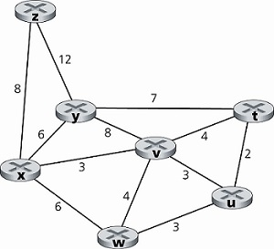
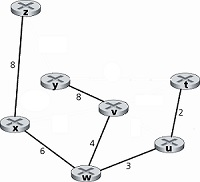
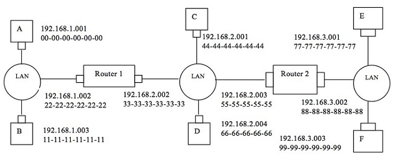

企業資料通訊 作業3
第三次作業-6/8
-
針對下圖中所示的網路連結成本，請利用Dijkstra 最短路徑演算法計算從w 到所有網路節點的最短路徑(shortest path) (需詳列運算過程)。 [共50分]

答案：
步驟 N’ D(t),P(t) D(u),P(u) D(v),P(v) D(x),P(x) D(y),P(y) D(z),P(z) 0 w ∞ 3,w 4,w 6,w ∞ ∞ 1 wu 5,u - 4,w 6,w ∞ ∞ 2 wuv 5,u - - 6,w 12,v ∞ 3 wuvt - - - 6,w 12,v ∞ 4 wuvtx - - - - 12,v 14,x 5 wuvtxy - - - - - 14,x 6 wuvtxyz - - - - - - 連結狀態演算法↑
目的端 連結 t (w,u) u (w,u) v (w,v) x (w,x) y (w,v) z (w,x) 節點W的最小成本路徑與轉送表 -
假設節點A、B、C 都連接到相同的廣播LAN上(透過其轉接卡)。如果A 會送出數千筆IP 資料報給B，其中每一份封裝的訊框都定址到B 的MAC 位址，則C 的轉接卡會處理這些訊框嗎？如果會的話，C 的轉接卡會將訊框中的IP資料報交給C的網路層嗎？如果A 所送出的訊框使用的是MAC 廣播位址，你的答案會有何改變？[共20分]
答案：
- 會，每張收到訊框的轉接卡，都會檢查訊框中的目的端MAC位址是否與自身的MAC位址相符。
- 不會，訊框中的目的端MAC位址與自身的MAC位址不符，轉接卡會丟棄該訊框。
- 如果A 所送出的訊框使用的是MAC 廣播位址，C的轉接卡會接收後處理。
-
請考量由兩台路由器所連接的三個LAN，如下圖所示。
其中每一host以及router都詳細指出其IP位址以及Mac位址，試回答下列問題：[共30分]

請考量從主機E 傳送IP 資料報 (datagram) 給主機B。假設所有ARP 表格包含的都是最新的資訊。請列舉所有步驟 (steps)。
答案：
- 傳送端(主機E)會將資料報(包含目的端IP)以及路由器2的介面192.168.3.002的MAC位址(經由ARP表格取得)交給轉接卡，傳送端轉接卡接收到後便會建立訊框，然後傳到路由器2的介面192.168.3.002的轉接卡，然後將這份訊框上交給路由器2的網路層。
- 路由器2經過查詢路由器轉送表後，發現要由介面192.168.2.003轉送出去，所以把資料報傳給此介面的轉接卡，轉接卡會把資料報封裝到新的訊框中，然後傳到路由器1的介面192.168.2.002的MAC位址(經由ARP表格取得)。
- 路由器1經過查詢路由器轉送表後，發現要由介面192.168.1.002轉送出去，所以把資料報傳給此介面的轉接卡，轉接卡會把資料報封裝到新的訊框中，然後傳到主機B的介面192.168.1.003的MAC位址(經由ARP表格取得)。